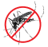

<div class="container-fluid footer mt-5">
  <div class="row">

    <!-- name  -->
    <div class="col-lg-6">
      <h1><a href="#">DengueMap</a></h1>
      <p>Você sabe onde mora o perigo, acabe com ele.</p>
    </div>

    <!-- nav  -->
    <div class="col-lg-4">
    </div>

    <!-- socialmedia  -->
    <div class="col-lg-2">
      <h1>Contatos</h1>
      <p>  Secretaria de Saúde da Prefeitura</p>
      <p>  (47) 3381 - 6100</p>
      <p>  semus@blumenau.sc.gov.br</p>
    </div>
  </div>
</div>
